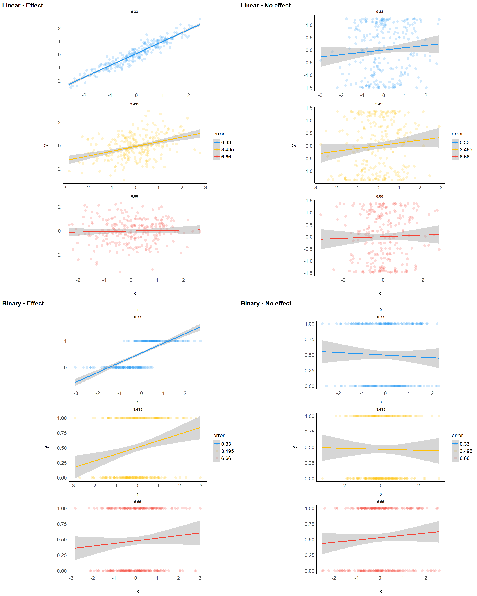
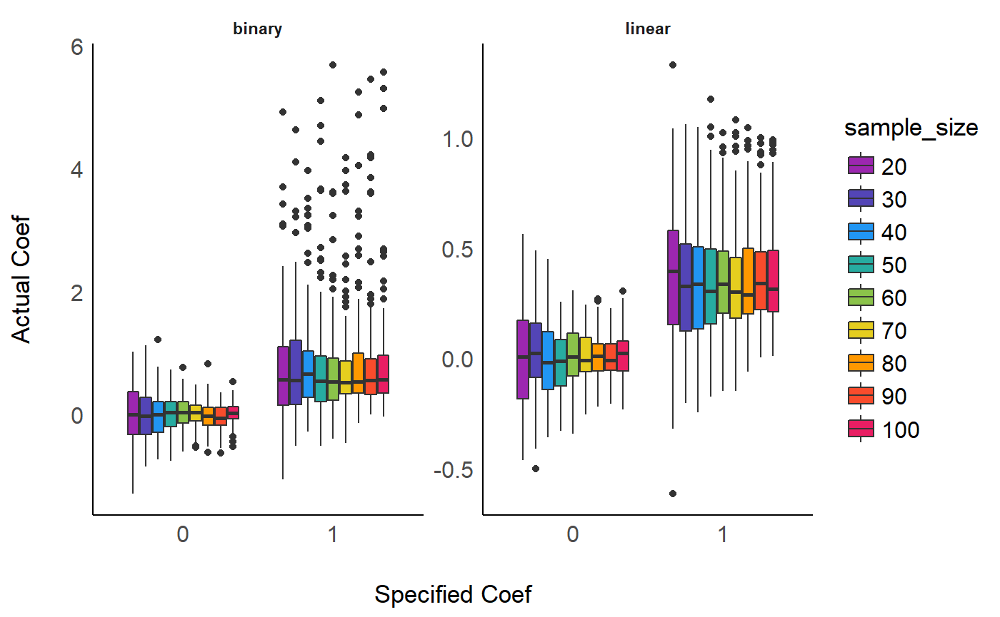
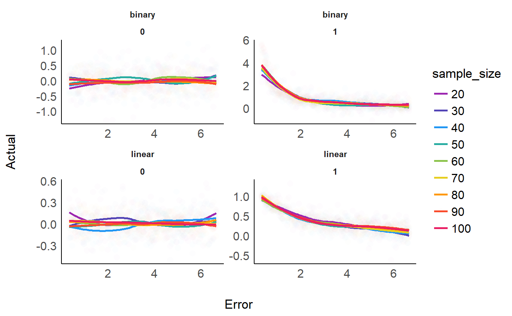
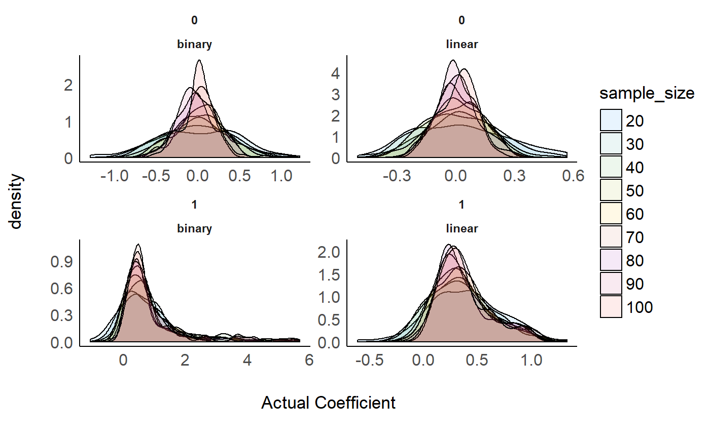

bayesian_indices.RmdThis code was used by the articles presented in bayestestR to simulate statistical models.
generate_data <- function(true_effect=0, outcome_type="linear", sample_size=50, error=0){
# Generate data
data <- data.frame(x = sort(rnorm(sample_size, 0, 1)))
if(outcome_type == "linear"){
if(true_effect == 1){
data$y <- data$x
} else{
data$y <- parameters::standardize(cos(data$x*5))
}
} else{
if(true_effect == 1){
data$y <- ifelse(data$x > 0, 1, 0)
} else{
data$y <- ifelse(cos(data$x*5) > 0, 1, 0)
}
}
# Add error
data$x <- parameters::standardize(data$x + rnorm(sample_size, 0, error))
return(data)
}compute_models <- function(data, outcome_type="linear", chains=4, iter=2000, warmup = 1/2){
if(outcome_type == "linear"){
model_frequentist <- lm(y ~ x, data = data)
temp <- capture.output(
model_bayesian <- stan_glm(y ~ x, data = data, prior = normal(0, 1), chains = chains, iter = iter, warmup = round(warmup * iter)))
} else{
model_frequentist <- glm(y ~ x, data = data, family = "binomial")
temp <- capture.output(
model_bayesian <- stan_glm(y ~ x, data = data, family = "binomial", prior = normal(0, 1), chains = chains, iter = iter, warmup = round(warmup * iter)))
}
return(
list(
frequentist = model_frequentist,
bayesian = model_bayesian
)
)
}compute_indices <- function(models){
params <- parameters::model_parameters(models$frequentist)[2, ] %>%
dplyr::select(beta, SE, CI_low_95_freq = CI_low, CI_high_95_freq = CI_high, p_value = p)
posterior <- as.data.frame(models$bayesian)$x
algorithm <- insight::find_algorithm(models$bayesian)
params$chains <- algorithm$chains
params$iterations <- algorithm$iterations
params$warmup <- algorithm$warmup / params$iterations
params$samples <- nrow(posterior)
prior <- bayestestR::describe_prior(models$bayesian)[2, ]
params$Prior_Distribution <- prior$Prior_Distribution
params$Prior_Location <- prior$Prior_Location
params$Prior_Scale <- prior$Prior_Scale
params$Median <- median(posterior)
params$Mean <- mean(posterior)
map <- map_estimate(posterior)
params$MAP <- map
params$MAP_density <- attributes(map)$MAP_density
params$p_direction <- p_direction(posterior, method="direct")
params$p_direction_AUC <- p_direction(posterior, method="logspline")
params$p_MAP <- p_map(posterior)
range <- rope_range(models$bayesian)
params$ROPE_range <- range[[2]]
params$ROPE_90 <- rope(posterior, range = range, ci=0.90)$ROPE_Percentage
params$ROPE_95 <- rope(posterior, range = range, ci=0.95)$ROPE_Percentage
params$ROPE_full <- rope(posterior, range = range, ci=1)$ROPE_Percentage
params$p_ROPE <- tryCatch({
p_rope(posterior, range = range)
}, error = function(error_condition) {
NA
})
# Bayesfactor
# This doens't really work
# params$BF <- as.numeric(bayesfactor_savagedickey(models$bayesian,
# verbose=FALSE)$BF)
params$BF <- as.numeric(bayesfactor_savagedickey(posterior,
prior = distribution_normal(length(posterior),
mean=params$Prior_Location,
sd=params$Prior_Scale),
hypothesis = 0,
verbose=FALSE))
# CI
ci_95 <- hdi(posterior, ci=0.95)
params$CI_low_95_hdi <- ci_95$CI_low
params$CI_high_95_hdi <- ci_95$CI_high
ci_90 <- hdi(posterior, ci=0.90)
params$CI_low_90_hdi <- ci_90$CI_low
params$CI_high_90_hdi <- ci_90$CI_high
ci_95 <- ci(posterior, ci=0.95)
params$CI_low_95_quantile <- ci_95$CI_low
params$CI_high_95_quantile <- ci_95$CI_high
ci_90 <- ci(posterior, ci=0.90)
params$CI_low_90_quantile <- ci_90$CI_low
params$CI_high_90_quantile <- ci_90$CI_high
params
}generate_and_process <- function(true_effect=0, outcome_type="linear", sample_size=50, error=0, chains=4, iter=2000, warmup = 1/2, modulate_priors = FALSE){
data <- generate_data(true_effect=true_effect, outcome_type=outcome_type, sample_size=sample_size, error=error)
models <- compute_models(data, outcome_type=outcome_type, chains=chains, iter=iter, warmup = warmup)
params <- compute_indices(models)
params$Prior <- "Uninformative"
if(modulate_priors){
# Congruent
models$bayesian <- update(models$bayesian, prior = normal(location = 1,
scale = params$Prior_Scale,
autoscale = FALSE))
params_congruent <- compute_indices(models)
params_congruent$Prior <- "Congruent"
# Incongruent
models$bayesian <- update(models$bayesian, prior = normal(location = -1,
scale = params$Prior_Scale,
autoscale = FALSE))
params_incongruent <- compute_indices(models)
params_incongruent$Prior <- "Incongruent"
params <- rbind(params, params_congruent, params_incongruent)
}
rownames(params) <- NULL
params
}The simulation aimed at modulating the following characteristics:
We generated a dataset for each combination of these characteristics, resulting in a total of 2 * 2 * 9 * 1000 = 36000 Bayesian and frequentist models.
options(mc.cores = parallel::detectCores())
set.seed(333)
# Parameters -------------------------------------------------------------------
outcome_types <- c("binary", "linear")
effects <- c(0, 1)
sample_sizes <- seq(20, 100, length.out = 3)
errors <- seq(0.33, 6.66, length.out = 2)
# Run --------------------------------------------------------------------------
# Initialize data
all_data <- data.frame()
# Start loop
for(outcome_type in outcome_types){
print(outcome_type)
for(true_effect in effects){
for(error in errors){
for(sample_size in sample_sizes){
for(iteration in 1:2){
cat(".")
fail <- TRUE
while(fail==TRUE){
tryCatch({
params <- generate_and_process(true_effect=true_effect, outcome_type=outcome_type, sample_size=sample_size, error=error)
fail <- FALSE
},error=function(e){
},warning=function(w){
cat("*")
})
}
# Save data
params <- mutate(params,
true_effect=true_effect,
sample_size=sample_size,
outcome_type = outcome_type,
error = error,
iteration=iteration)
all_data <- rbind(all_data, params)
}
}
}
}
# write.csv(all_data, "bayesSim_study1.csv", row.names = FALSE)
}effects <- c(0, 1)
sample_sizes <- c(240)
outcome_types <- c("binary", "linear")
errors <- seq(0.33, 6.66, length.out = 3)
example_data <- data.frame()
for(outcome_type in outcome_types){
for(true_effect in effects){
for(error in errors){
for(sample_size in sample_sizes){
data <- generate_data(true_effect, outcome_type, sample_size, error)
example_data <- rbind(
example_data,
mutate(data,
true_effect=true_effect,
outcome_type=outcome_type,
sample_size=sample_size,
error=error))
}
}
}
}
linear_noeffect <- example_data %>%
filter(outcome_type == "linear",
true_effect==0) %>%
mutate(sample_size = as.factor(sample_size),
error = as.factor(error)) %>%
ggplot(aes(x=x, y=y, color=error)) +
geom_point2(alpha=0.2, size=3) +
geom_smooth(method="lm")+
theme_modern() +
scale_color_material_d() +
facet_wrap(~error, scale="free", nrow=3)
linear_effect <- example_data %>%
filter(outcome_type == "linear",
true_effect==1) %>%
mutate(sample_size = as.factor(sample_size),
error = as.factor(error)) %>%
ggplot(aes(x=x, y=y, color=error)) +
geom_point2(alpha=0.2, size=3) +
geom_smooth(method="lm")+
theme_modern() +
scale_color_material_d() +
facet_wrap(~error, scale="free", nrow=3)
binary_noeffect <- example_data %>%
filter(outcome_type == "binary",
true_effect==0) %>%
mutate(true_effect = as.factor(true_effect),
sample_size = as.factor(sample_size),
error = as.factor(error)) %>%
ggplot(aes(x=x, y=y, color=error)) +
geom_point2(alpha=0.2, size=3) +
geom_smooth(method="glm")+
theme_modern() +
scale_color_material_d() +
facet_wrap(~true_effect*error, scale="free", nrow=3)
binary_effect <- example_data %>%
filter(outcome_type == "binary",
true_effect==1) %>%
mutate(true_effect = as.factor(true_effect),
sample_size = as.factor(sample_size),
error = as.factor(error)) %>%
ggplot(aes(x=x, y=y, color=error)) +
geom_point2(alpha=0.2, size=3) +
geom_smooth(method="glm")+
theme_modern() +
scale_color_material_d() +
facet_wrap(~true_effect*error, scale="free", nrow=3)
plots(linear_effect, linear_noeffect,
binary_effect, binary_noeffect,
nrow = 2,
tags=c("Linear - Effect", "Linear - No effect",
"Binary - Effect", "Binary - No effect"))
all_data %>%
mutate(sample_size = as.factor(sample_size),
beta = as.numeric(beta),
true_effect = as.factor(true_effect)) %>%
ggplot(aes(x=true_effect, y=beta, fill=sample_size)) +
geom_boxplot() +
theme_modern() +
scale_fill_material_d("rainbow") +
xlab("\nSpecified Coefficient") +
ylab("Actual Coefficient\n") +
facet_wrap(~outcome_type, scale="free_y")
all_data %>%
mutate(sample_size = as.factor(sample_size),
beta = as.numeric(beta),
error = as.numeric(error),
true_effect = as.factor(true_effect)) %>%
ggplot(aes(x=error, y=beta, color=sample_size)) +
geom_point2(alpha=0.01, size=3) +
geom_smooth(se=FALSE)+
theme_modern() +
scale_color_material_d("rainbow") +
xlab("Error") +
ylab("Actual Coefficient\n") +
facet_wrap(~outcome_type*true_effect, scale="free")
all_data %>%
mutate(sample_size = as.factor(sample_size),
true_effect = as.factor(true_effect),
beta = as.numeric(beta)) %>%
ggplot(aes(x=beta, fill=sample_size)) +
geom_density(alpha=0.1) +
theme_modern() +
scale_fill_material_d() +
xlab("Actual Coefficient\n") +
facet_wrap(~true_effect*outcome_type, scale="free")
The simulation aimed at modulating the following characteristics:
We generated 3 datasets for each combination of these characteristics, resulting in a total of 2 * 2 * 1000 * 9 = 34560 Bayesian and frequentist models.
# options(mc.cores = parallel::detectCores())
set.seed(333)
# Parameters -------------------------------------------------------------------
outcome_types <- c("binary", "linear")
effects <- c(0, 1)
# chains <- c(4)
# draws <- seq(50, 5000, by=50)
# warmups <- seq(1/10, 9/10, by=1/10)
# Short version
chains <- c(4)
draws <- seq(100, 1000, by=100)
warmups <- seq(3/10, 7/10, by=1/10)
# Run --------------------------------------------------------------------------
# Initialize data
all_data <- data.frame()
# Start loop
for(outcome_type in outcome_types){
print(outcome_type)
for(true_effect in effects){
for(n_chains in chains){
for(n_draws in draws){
for(warmup in warmups){
for(iteration in 1:1){
cat(".")
fail <- TRUE
while(fail==TRUE){
tryCatch({
params <- generate_and_process(true_effect=true_effect, outcome_type=outcome_type, sample_size=50, error=1, type="bayesian", iter=n_draws, chains=n_chains, warmup=warmup)
fail <- FALSE
params
},error=function(e){
},warning=function(w){
cat("*")
})
}
# Save data
params <- mutate(params,
true_effect=true_effect,
outcome_type = outcome_type,
iteration=iteration)
all_data <- rbind(all_data, params)
}
}
}
}
}
write.csv(all_data, "bayesSim_study2.csv", row.names = FALSE)
}